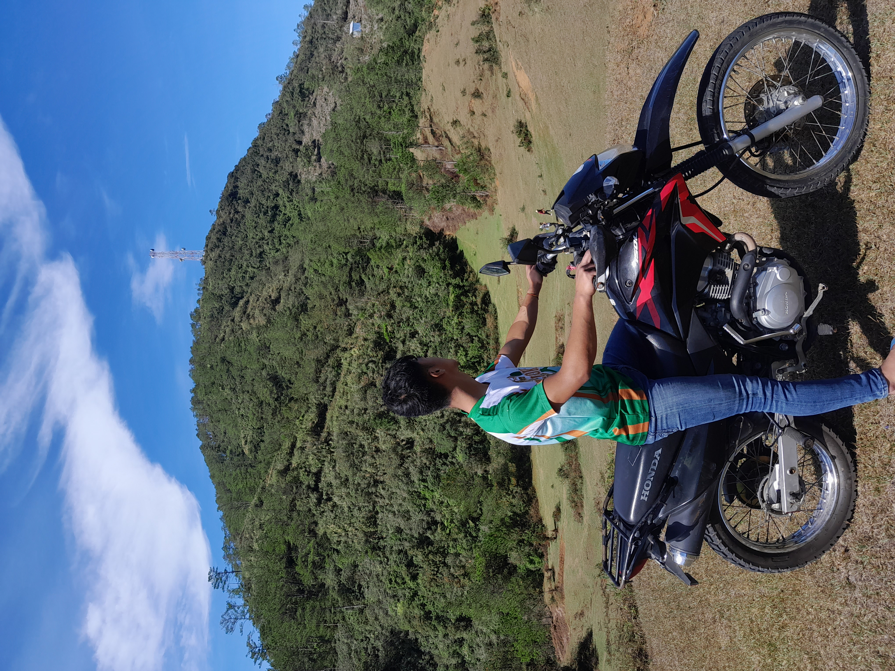

Daniel F. Calngan
Just do your best!
WELCOME TO MY PORTFOLIO
Being an IT Student
Learning today, building tomorrow.
Hi! I am currently in my third year of the Bachelor of Science in Information Technology program. This course gives me a lot of stress and late-night activities, but nonetheless, it is very fun and helps me develop my skills. Throughout my journey as an IT student, I have learned different things about programming, web development, databases, and computer networking. Some activities are challenging, especially when I encounter errors in my code, but these experiences teach me to be more patient, creative, and determined. Every challenge gives me an opportunity to learn something new and improve my understanding of technology. As I continue my studies, I hope to gain more knowledge and practical experience that will help me prepare for my future career. My goal is to become a skilled IT professional who can use technology to solve problems and create useful applications. Although the journey is not always easy, I believe that hard work, perseverance, and a willingness to learn will help me achieve my dreams.
Explore My Projects
GET TO KNOW ME
Personal Information
Discover my academic journey, the skills I am developing, and the interests that inspire me to explore the world of Information Technology.
My Course
Bachelor of Science in Information Technology. My course focuses on programming, web development, database management, computer networking, and the use of technology to solve real-world problems.
My Year Level
Third Year College. As I continue my academic journey, I am gaining more knowledge through hands-on activities, programming exercises, and projects that challenge me to improve my technical skills and problem-solving abilities.
My Interests
I am interested in Web Development and Multimedia Design. I enjoy learning how to create attractive websites, organize content, work with colors and layouts, and combine creativity with technology to build engaging digital experiences.
WHAT I CAN DO
My Skills
Technical skills I am learning and improving through my studies, practical activities, and personal projects as an Information Technology student.
01
Computer Troubleshooting
Identifying and resolving common computer hardware and software problems by checking system settings, examining possible causes, and applying appropriate solutions to help computers function properly.
02
Code Debugging
Finding, understanding, and correcting errors in program code. This involves carefully checking instructions, testing possible solutions, and improving code to make programs work as expected.
03
Front-end Designing
Creating website layouts and user interfaces using HTML and CSS. This includes organizing content, styling text, choosing colors, arranging elements, and designing attractive and user-friendly web pages.
MY CREATIVE WORK
My Projects
A collection of my multimedia design projects that showcase my creativity, developing technical skills, and experience using digital design tools to create visual content.

Adobe Illustrator
Flat Logo Design for Information Technology
A flat logo design created using vector shapes, lines, and colors in Adobe Illustrator. This project helped me explore visual identity, shape arrangement, and the importance of creating a simple and recognizable logo for the Information Technology field.

Adobe Photoshop
Promotional Poster
A promotional poster or tarpaulin design developed using images, shapes, text, and layout adjustments in Adobe Photoshop. This project allowed me to practice combining visual elements to create an attractive design that communicates information clearly and captures the audience's attention.

Mockup Design
Shirt Design Using a Mock-up
A shirt design presented using a digital mockup to show how the artwork may appear on an actual T-shirt or long-sleeved shirt. This project helped me understand how to position designs on clothing and present creative concepts in a more realistic and visually appealing way.
THE PEOPLE BEHIND THE WORK
Our Team
Meet the team members.

Jane Wilson
Web Designer | Student
jane@example.com
Joe Salgon
Web Developer | Student
joe@example.com

Gibson Epo
Web Developer | Student
gibson@example.com
Contact Me
Name:
Daniel F. Calngan
Email Address:
danielcalngan@gmail.com
Phone Number:
09637407472